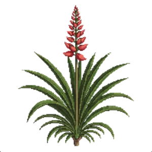

Red Yucca (compact)
Hesperaloe parviflora 'Brakelights'

Red Yucca (compact) is a perennial for focal point, structure, suited to full sun and loam or sandy soil, flowering May, Jun, Jul, Aug, Sep.
| Type | Perennial |
|---|---|
| Mature height | 60 cm |
| Spread | 90 cm |
| Aspect | full sun |
| Foliage | Evergreen |
| Hardiness | USDA 5a-10b |
| Pollinator-friendly | Yes |
| Pet-safe | Yes |
Where to use it in a border
At around 60 cm, it sits best toward the back of a border, or on its own as a focal point with room around it. Give it about 90 cm of room to spread. It is hardy across USDA zones 5a to 10b, so check it suits your area before planting.
It appears in our lists of full sun, sandy soil, evergreen plants, pollinator-friendly plants, pet-safe plants.
Border Builder uses Red Yucca (compact)'s height, spread, soil, bloom months and companions to place it in a full border plan for your own conditions, on iPhone and iPad.
Flowering through the year
Worth knowing
- Evergreen, so it keeps the border furnished through winter.
- Its flowers are valued by bees and other pollinators.
Good companions
Plants that share its conditions and style, chosen to complement its place in the border:
- Angelita Daisyto edge in front
- Black Daleato edge in front
- Blackfoot Daisyto edge in front
- Chuparosafor height behind it
- Coral Aloeto edge in front
- Creosote Bushfor height behind it
Garden styles
Mediterranean Modern Native Wildlife garden Xeriscape (low-water)